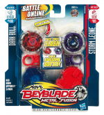

Red Horn Uppercut Set
| Red Horn Uppercut Faceoff Set | |
|  | |
| Number: | BB-40A and B-105 |
|---|---|
| System: | Metal Fight Beyblade |
Contents
Note: This Set's release is exclusive to Hasbro.
Contents
- BB-40A Dark Bull H145SD (Black highlights on Clear Wheel, clear Track)
- B-105 Storm Leone 100HF (Purple Clear Wheel, white Track, black Bottom)
- Two Ripcord Launchers (Clear blue and red)
Overall
Since this Set includes only a couple semi-useful parts, it is not a needed purchase. Dark is overall useless for every type, while Storm's weight is insufficient for an Attack Metal Wheel in this stage of the metagame. However, Bull can be used in top-tier Stamina and Defense combinations, but more balanced Clear Wheels such as Aquario and Cancer are preferred. Also, H145 can be used to a high extent in Attack combinations with the Flash Metal Wheel, where its weight and synergy are beneficial. 100 is usable in some combinations, but Tracks like 85 and 90 are generally preffered for this purpose, no matter whether it's in Stamina, Defense, or in Attack. Although SD is top-tier for Stamina, the more widely available WD works as a fine substitute. Finally, HF's inability to retain a flower pattern from Banking or Sliding Shoot makes it a poor choice for Attack types compared to Bottoms like RF and R²F. In short, this Set is not a worthwhile purchase, and should only be considered for collection purposes.